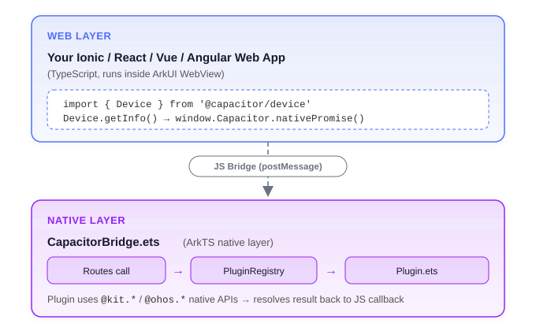

Building an Oniro App with Capacitor OpenHarmony
This tutorial walks you through creating a web application that runs on Oniro/OpenHarmony devices using the Capacitor OpenHarmony platform adapter. You will start from a blank Ionic project, integrate the Oniro Capacitor packages, call native device APIs from JavaScript, and deploy the app to a real device or emulator.
Table of Contents
- Introduction
- Prerequisites
- Create a New Ionic Project
- Install the OpenHarmony Platform Adapter
- Configure Capacitor
- Install Plugin Packages
- Use Plugins in Your App
- Build the Web Assets
- Add the OpenHarmony Platform
- Sync Assets and Plugins
- Configure App Signing
- Run the App
- View Logs
- Troubleshooting
- Next Steps
1. Introduction
Capacitor is a cross-platform native runtime that lets you build web apps and deploy them to iOS, Android, and now Oniro/OpenHarmony — using a single JavaScript codebase.
The @oniroproject/capacitor-openharmony package is a Capacitor platform adapter for OpenHarmony. It provides:
- A native container built on the ArkUI
Webcomponent that loads your web app. - A JavaScript bridge that connects
window.Capacitorcalls to native OpenHarmony APIs written in ArkTS. - A CLI integration for the standard
npx cap add/sync/openworkflow. - A set of plugin packages under the
@oniroprojectnpm scope that mirror the standard Capacitor plugin API surface.
How it works

2. Prerequisites
Before you begin, ensure you have the following tools installed and configured.
| Tool | Version | Notes |
|---|---|---|
| Node.js | 20.x or 22.x LTS | Required by Capacitor CLI |
| npm | 10.x+ | Bundled with Node 20+ |
| Ionic CLI | 7.x | npm install -g @ionic/cli |
| OpenHarmony SDK | API 12+ | Install via DevEco Studio's SDK Manager, or using the Oniro IDE VS Code extension |
| hdc | Bundled with the SDK | Device connector CLI — needed for command-line builds and deploys |
| hvigorw | Bundled with Command Line Tools | Build tool for OpenHarmony — needed for command-line builds |
| DevEco Studio or Oniro IDE | Latest | For building, signing, and deploying. The Oniro IDE is a VS Code extension alternative to DevEco Studio |
Install Node.js
3. Create a New Ionic Project
Use the Ionic CLI to scaffold a new Ionic React project with TypeScript.
The --capacitor flag sets up a capacitor.config.ts and installs Capacitor packages. The current Ionic CLI installs Capacitor 8. The @oniroproject/capacitor-openharmony adapter supports Capacitor 6, 7, and 8, so you can keep the version that was installed.
If you already have an existing Ionic/React/Vue/Angular project that uses Capacitor (6, 7, or 8), skip to step 4 and run the commands from that project's root.
4. Install the OpenHarmony Platform Adapter
Install the @oniroproject/capacitor-openharmony platform package:
This package registers itself as a Capacitor platform named openharmony. When using Capacitor CLI commands (add, sync, etc.), reference it by its full package name: @oniroproject/capacitor-openharmony.
5. Configure Capacitor
Open capacitor.config.ts (created by the Ionic scaffolding) and update the appId and appName. The scaffolded defaults (io.ionic.starter) need to be changed to your own values:
import type { CapacitorConfig } from '@capacitor/cli';
const config: CapacitorConfig = {
appId: 'com.example.myoniroapp', // Reverse-domain bundle ID
appName: 'MyOniroApp', // Display name on the device
webDir: 'dist' // Vite/React build output folder
};
export default config;
Important
The appId becomes the OpenHarmony bundle name. Use a reverse-domain format and avoid hyphens — OpenHarmony bundle IDs may only contain alphanumeric characters and dots.
6. Install Plugin Packages
The Oniro project provides OpenHarmony-native implementations of the most common Capacitor plugins. Each plugin has two parts:
@capacitor/<name>— the standard Capacitor package, which provides the TypeScript interface and types used in your web code.@oniroproject/capacitor-<name>— the OpenHarmony native implementation (ArkTS.etssource files) that is copied into the native project duringcap sync.
Install both layers together. Some @capacitor/* packages (like @capacitor/app) may already be installed by the Ionic scaffolding — that is fine, npm will skip them. The @capacitor/* packages will automatically resolve to a version compatible with the Capacitor core version you have installed:
npm install \
@capacitor/app \
@capacitor/browser \
@capacitor/device \
@capacitor/filesystem \
@capacitor/network \
@capacitor/preferences \
@capacitor/toast \
@oniroproject/capacitor-app \
@oniroproject/capacitor-browser \
@oniroproject/capacitor-device \
@oniroproject/capacitor-filesystem \
@oniroproject/capacitor-network \
@oniroproject/capacitor-preferences \
@oniroproject/capacitor-toast
Why two packages?
Your web code imports from @capacitor/device etc. — these are the official Capacitor packages and ship the TypeScript API. The @oniroproject/* packages contain the .ets native code that cap sync copies into the openharmony/ native project. Both must be installed as dependencies.
Plugin overview
| Plugin | Package | What it does |
|---|---|---|
| App | @oniroproject/capacitor-app |
App lifecycle events, exitApp() |
| Browser | @oniroproject/capacitor-browser |
In-app browser (modal WebView), open() / close() |
| Device | @oniroproject/capacitor-device |
Device model, OS version, language, memory info |
| Filesystem | @oniroproject/capacitor-filesystem |
Read, write, append, delete files; directory listing |
| Network | @oniroproject/capacitor-network |
Connection status and type; change events |
| Preferences | @oniroproject/capacitor-preferences |
Key-value persistent storage |
| Toast | @oniroproject/capacitor-toast |
Brief overlay notifications |
7. Use Plugins in Your App
Import plugins from the standard @capacitor/* packages — the same way you would for iOS or Android. The OpenHarmony bridge dispatches the calls to the @oniroproject native implementations at runtime.
Device — read device information
import { Device } from '@capacitor/device';
const info = await Device.getInfo();
console.log(info.model); // e.g. "Huawei Mate 60"
console.log(info.osVersion); // e.g. "4.0.0"
console.log(info.manufacturer); // e.g. "HUAWEI"
const lang = await Device.getLanguageCode();
console.log(lang.value); // e.g. "zh"
Network — check connectivity
import { Network } from '@capacitor/network';
// One-time query
const status = await Network.getStatus();
console.log(status.connected); // true / false
console.log(status.connectionType); // "wifi" | "cellular" | "ethernet" | "none"
// Listen for changes
Network.addListener('networkStatusChange', (status) => {
console.log('Network changed:', status.connectionType);
});
Preferences — persistent key-value store
import { Preferences } from '@capacitor/preferences';
// Write
await Preferences.set({ key: 'username', value: 'alice' });
// Read
const { value } = await Preferences.get({ key: 'username' });
console.log(value); // "alice"
// Delete
await Preferences.remove({ key: 'username' });
Note
@capacitor/preferences must be installed alongside @oniroproject/capacitor-preferences (see step 6).
Filesystem — read and write files
import { Filesystem, Directory, Encoding } from '@capacitor/filesystem';
// Write a text file to the app data directory
await Filesystem.writeFile({
path: 'notes/hello.txt',
data: 'Hello from Oniro!',
directory: Directory.Data,
encoding: Encoding.UTF8,
});
// Read it back
const result = await Filesystem.readFile({
path: 'notes/hello.txt',
directory: Directory.Data,
encoding: Encoding.UTF8,
});
console.log(result.data); // "Hello from Oniro!"
// Save a file to the user's Documents folder (triggers the system file picker)
await Filesystem.writeFile({
path: 'export.txt',
data: 'Exported content',
directory: Directory.Documents,
encoding: Encoding.UTF8,
});
Tip
Writing to Directory.Documents on OpenHarmony triggers the system DocumentViewPicker, allowing the user to choose where to save the file.
Toast — display brief messages
import { Toast } from '@capacitor/toast';
await Toast.show({
text: 'Saved successfully!',
duration: 'short', // 'short' (2 s) or 'long' (3.5 s)
});
Browser — open a URL in a modal browser
import { Browser } from '@capacitor/browser';
await Browser.open({ url: 'https://oniroproject.org/' });
// Listen for events
Browser.addListener('browserPageLoaded', () => {
console.log('Page loaded');
});
// Close programmatically
await Browser.close();
App — lifecycle and exit
import { App } from '@capacitor/app';
App.addListener('appStateChange', ({ isActive }) => {
console.log('App is active?', isActive);
});
// Exit the application
App.exitApp();
8. Build the Web Assets
Before syncing to the native project, build your web application:
This compiles TypeScript and bundles your app into the dist/ directory (or whatever webDir is set to in capacitor.config.ts). The native WebView will serve files from this directory.
Note
Run this command every time you change your web code before re-syncing.
9. Add the OpenHarmony Platform
Generate the native OpenHarmony project inside your Ionic project:
Note
You must use the full npm package name @oniroproject/capacitor-openharmony — not just openharmony. The Capacitor CLI resolves third-party platforms by their package name.
This creates an openharmony/ directory at the root of your project. It contains a complete OpenHarmony application project. The directory structure looks like:
openharmony/
├── AppScope/ ← application-level config and resources
├── entry/
│ └── src/main/
│ ├── ets/
│ │ ├── capacitor/ ← Capacitor bridge (ArkTS)
│ │ │ ├── CapacitorBridge.ets
│ │ │ ├── PluginRegistry.ets ← auto-generated by cap sync
│ │ │ └── plugins/ ← plugin .ets files (synced)
│ │ ├── entryability/
│ │ │ └── EntryAbility.ets
│ │ └── pages/
│ │ └── Index.ets
│ └── resources/
│ └── rawfile/
│ └── www/ ← your built web assets land here
├── build-profile.json5
├── hvigor/ ← hvigor build config
├── hvigorfile.ts
└── oh-package.json5
Note
Run npx cap add only once per project. For subsequent updates, use cap sync.
10. Sync Assets and Plugins
After every web build, sync your web assets and plugin native sources into the openharmony/ native project:
This command:
- Copies the contents of
dist/toopenharmony/entry/src/main/resources/rawfile/www/. - Scans your
node_modulesfor installed@oniroproject/capacitor-*plugins. - Copies each plugin's
.etssource file intoopenharmony/entry/src/main/ets/capacitor/plugins/. - Regenerates
PluginRegistry.etswith the correct imports and registrations for all detected plugins.
Development workflow:
# After changing web code:
npm run build && npx cap sync @oniroproject/capacitor-openharmony
# After installing a new @oniroproject plugin:
npm install @oniroproject/capacitor-<name>
npx cap sync @oniroproject/capacitor-openharmony
11. Configure App Signing
OpenHarmony applications must be signed before they can run on a physical device or a signed emulator. There are two options:
Option A — Oniro IDE (VS Code extension)
- Open the
openharmony/folder in Visual Studio Code. - Ensure the Oniro IDE extension is installed from the VS Code Marketplace.
- Use the extension to generate the signing configuration. It will automatically create the keys, profile, and update
build-profile.json5.
Option B — DevEco Studio
- Open the
openharmony/folder in DevEco Studio (File → Open). - Go to File → Project Structure → Project → Signing Configs.
- Click Automatically generate signature.
- Sign in with your Huawei ID if prompted.
- DevEco Studio generates and stores a debug keystore and signing profile automatically.
Warning
Without signing, hdc install will fail with a signature verification error.
12. Run the App
Option A — Command line with hvigorw and hdc
Verify hdc and hvigorw are on your PATH
If you installed the SDK and Command Line Tools via DevEco Studio or the Oniro IDE, add them to your shell profile. Ensure the SDK's toolchains/ directory (for hdc) and the Command Line Tools bin/ directory (for hvigorw) are on your PATH.
Verify that your device is connected:
From the openharmony/ directory inside your project:
cd openharmony
# 1. Build the debug HAP
hvigorw assembleHap --mode module -p product=default -p module=entry -p buildMode=debug --no-parallel --no-daemon
# 2. Install on the connected device
hdc install entry/build/default/outputs/default/entry-default-signed.hap
# 3. Launch the app
hdc shell aa start -a EntryAbility -b com.example.myoniroapp
Tip
Replace com.example.myoniroapp with the appId you set in capacitor.config.ts.
Option B — DevEco Studio
- Open the
openharmony/folder in DevEco Studio (File → Open, select theopenharmonydirectory). - Connect your device via USB or start an emulator.
- Click Run (the green play button) or press
Shift+F10. - DevEco Studio builds the HAP, installs it on the device, and launches it automatically.
13. View Logs
JavaScript console.log() calls from your web app and Capacitor plugins are forwarded to the device log stream. Capacitor bridge messages use the Capacitor and WebViewConsole tags.
You can view the logs from your running app by finding its PID and filtering the hilog output:
# 1. Find your app's main process PID
hdc shell ps -ef | grep com.example.myoniroapp
# 2. Stream logs, filtering for Capacitor and web console output
hdc shell hilog -P <pid> | grep -E "Capacitor|WebViewConsole"
14. Troubleshooting
cap sync does not copy a plugin
- Verify the
@oniroproject/capacitor-<name>package is listed independencies(notdevDependencies) of yourpackage.json. - Re-run
npm installthennpx cap sync @oniroproject/capacitor-openharmony.
App starts but the screen is blank
- Check that
webDirincapacitor.config.tsmatches your build output folder (distfor Vite). - Confirm
npm run buildcompleted without errors before runningcap sync. - Look for errors in the web console logs:
hdc shell hilog -P <pid> | grep -E "WebViewConsole".
Changes not reflected after editing code
Always re-run the full cycle after any web code change:
Then rebuild and reinstall the application.
hdc install fails with signature error
Ensure you have generated the signing configuration. The app must be signed before it can be installed on a device or emulator.
15. Next Steps
- Explore the source — the Capacitor OpenHarmony repository contains a complete Ionic React demo app and the full plugin source code.
- Publish your own plugin — follow the conventions in any existing plugin directory: one
.etsfile,package.jsonwith"capacitor": { "openharmony": { "src": "<PluginName>.ets" } }, and a class named<PluginName>PluginextendingCapacitorPlugin.